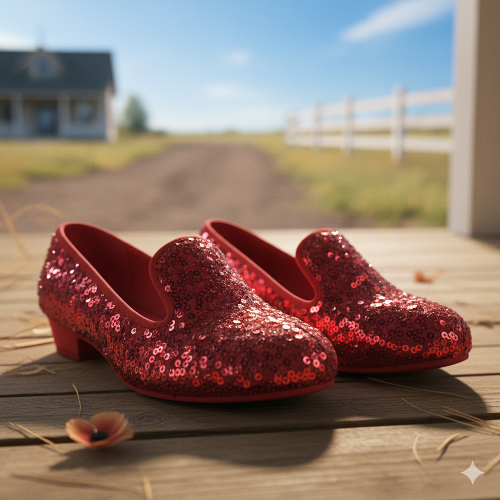
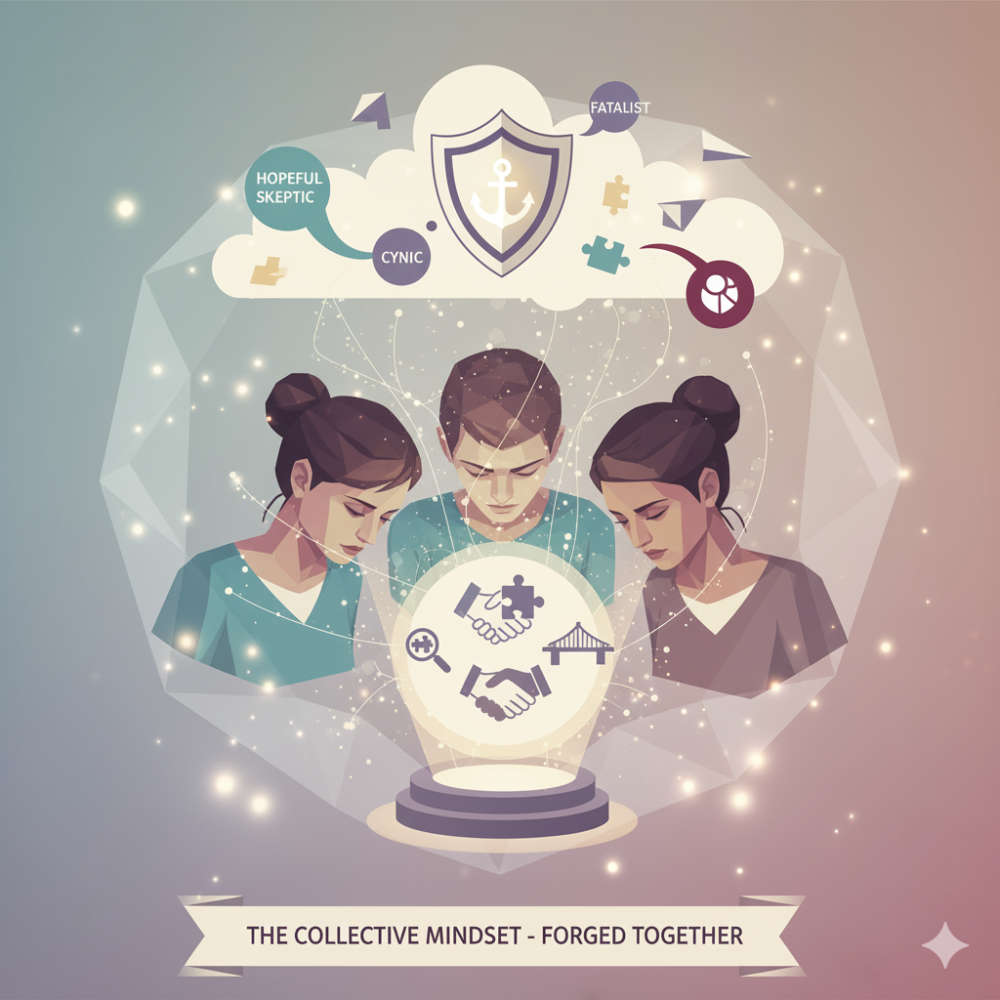

The First Choice: Your Map for Connection
Every interaction, especially the difficult ones, begins with a subconscious choice about the nature of connection itself. Do you believe it's a long, arduous journey or something you can access right now? Recognizing this belief is the first step.
The Yellow Brick Road Myth
The exhausting belief that connection is a faraway Oz. You think you must vanquish witches, win over wizards, and prove your worth just to get back home to a place of understanding.
The Ruby Slipper Realization
The profound trust that the power to connect is simple, present, and always within you. You just need to remember to "click your heels"—to use a small, concrete action to come back to yourself.

Why We Spiral: The Stories We Tell Ourselves
A spiral rarely starts with the words spoken. It starts with the unconscious worldview we apply to them. Recognizing your default lens is the key to choosing a different story.
The Hopeful Skeptic
Analytical + Optimistic
Principle: Simplicity favors innocence over malice.
"You probably just misunderstood; you didn't mean to hurt me."
The Straight-Up Cynic
Analytical + Pessimistic
Principle: Simplicity favors guilt over incompetence.
"You said that on purpose. That was a calculated move."
The Blissful Believer
Uncritical + Optimistic
Principle: Seek only evidence that supports a positive belief.
"Everything's fine! If we ignore it, it will go away."
The Passive Fatalist
Uncritical + Pessimistic
Principle: Assume the worst outcome is inevitable.
"Of course this is happening. We're doomed to repeat this forever."
What's Your Default Mindset?
When a difficult conversation starts, my first instinct is to...
The Tactics of Disconnection
When these mental models feel threatened, they deploy defensive tactics. These aren't just arguments; they are strategic power plays that shut down productive dialogue. Click on a card to see how to disarm it.
The Shutdown
One partner withdraws and refuses to communicate, holding the relationship hostage. This avoids accountability and leaves the other powerless.
Disarm It By Saying:
"I'll take the points for being wrong first, but my story is that you're shutting down because you're overwhelmed. How wrong am I?"
The Filibuster
Dominating a conversation with lengthy, circular arguments to exhaust the other partner and prevent a resolution.
Disarm It By Saying:
"This is a fantastic filibuster! I'll take bonus points for admitting I'm lost. Now, let's see how wrong *you* can be about what I'm thinking."
The Redistricting
Manipulating the boundaries of a disagreement, like shifting goalposts or changing the rules, to gain an advantage.
Disarm It By Saying:
"Ah, redistricting! I get triple points for being so wrong my actions came across as disrespectful. Let's get back to the original topic."
The Solution: The Wrongness Reward System
What if being wrong became the badge of honor instead of the source of shame? This system flips the script on conflict, transforming a "Rightness War" into a collaborative game of discovery.

The goal is no longer to be right, but to get it wrong in more interesting ways than you did yesterday. The game begins when the argument stops.
- Points for: Catching yourself mid-assumption.
- Bonus points for: Admitting you don't know what they meant.
- Double points for: Saying "I was completely wrong about that."
- Triple points for: Laughing at how wrong you were.